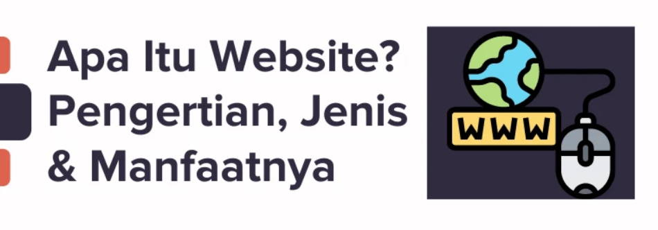

Pengertian, Jenis, dan Manfaat Website

Pengertian Website
Website adalah sekumpulan halaman yang saling terhubung dan diakses melalui jaringan internet. Setiap halaman web
berisi berbagai informasi seperti teks, gambar, atau video, yang dirancang menggunakan bahasa HTML. Untuk mengakses
sebuah website, pengguna memerlukan alamat unik yang disebut URL (Uniform Resource Locator).
Jenis-Jenis Website
Berikut adalah beberapa jenis website berdasarkan fungsinya:
- Website Pribadi: Digunakan untuk kepentingan pribadi, seperti blog atau portofolio.
- Website Bisnis: Digunakan untuk mempromosikan produk atau jasa sebuah perusahaan.
- Website E-commerce: Sebuah platform untuk bertransaksi jual beli secara online.
- Website Pendidikan: Digunakan untuk berbagi materi pendidikan dan informasi akademis.
- Website Berita: Digunakan untuk menyebarkan informasi terkini dan berita.
Manfaat Website
Website memberikan banyak manfaat, terutama di era digital saat ini. Beberapa manfaat utama website adalah:
- Menyebarkan Informasi: Website memungkinkan penyebaran informasi dengan cepat ke seluruh dunia.
- Sarana Promosi: Sebuah platform yang efektif untuk promosi bisnis, produk, atau layanan.
- Komunikasi: Membantu interaksi dan komunikasi antara perusahaan dan pelanggan.
- Transaksi Online: Memungkinkan pengguna melakukan pembelian dan pembayaran secara online.
- Meningkatkan Kredibilitas: Sebuah website profesional dapat meningkatkan citra dan kredibilitas suatu organisasi atau individu.
Kembali ke Daftar Artikel